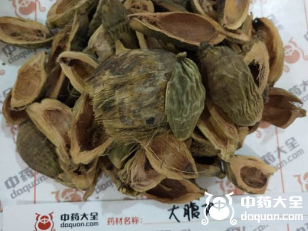
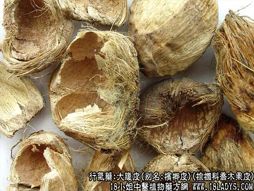
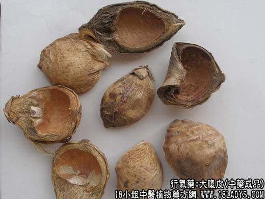

【中药概述】
大腹皮，别名：槟榔皮、槟榔壳、大腹毛、茯毛、槟榔衣、大腹绒，为棕榈科乔木植物槟榔的果皮。辛，微温。归脾、胃、大肠、小肠经。
1．行气宽中：用于脘腹胀痛，宽中除胀而止痛，适用于脾胃气滞所致的脘腹胀痛，常与厚朴，陈皮等同用。
2．利水消肿：用于水肿，小便不利，常与茯苓、冬瓜皮等同用；脚气浮肿，可与木瓜，苏叶，槟榔等同用。如（证治准绳<大腹皮散>）。
【药物形态】
大腹皮略呈椭圆形或长卵形瓢状，长4～7cm，宽2～3. 5cm，厚0.2～0.5cm。外果皮深棕色至近黑色，具不规则的纵皱纹及隆起的横纹，顶端有花柱残痕，基部有果梗及残存萼片。内果皮凹陷，褐色或深棕色，光滑呈硬壳状。体轻，质硬，纵向撕裂后可见中果皮纤维。气微，味微涩。大腹毛 略呈椭圆形或瓢状。外果皮多已脱落或残存。中果皮棕毛状，黄白色或淡棕色，疏松质柔。内果皮硬壳状，黄棕色或棕色，内表面光滑，有时纵向破裂。气微，味淡。
【药效鉴别】大腹皮行气消肿，主要用于气滞湿阻以致脘腹胀满，或水气外溢，皮肤水肿。
【化学成分】含槟榔碱及副槟榔碱。
【用量用法】5——15g，水煎服，或入剂。